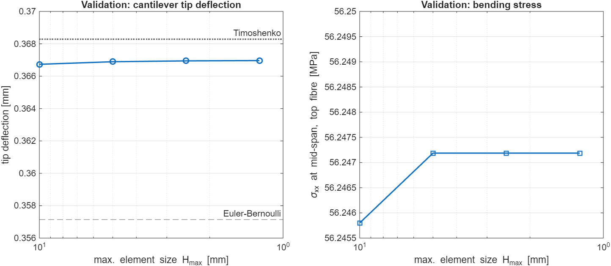

FEM study of a steel L-bracket – validation, stress concentration and redesignFEM-Studie eines Stahlwinkels – Validierung, Kerbspannung und Redesign
A wall bracket made of S235 steel plate (t = 10 mm) carries F = 1500 N at the end of a 200 mm arm. With my own MATLAB script (PDE Toolbox, 2D plane stress) I validated the model against beam theory, studied the inner corner and its fillet, tried lightening holes – and found that the original design yields, then redesigned it to a safety factor of about 2.Ein Wandwinkel aus S235-Blech (t = 10 mm) trägt F = 1500 N am Ende eines 200-mm-Arms. Mit meinem eigenen MATLAB-Skript (PDE Toolbox, ebener Spannungszustand) habe ich das Modell gegen die Balkentheorie validiert, die Innenecke und ihren Radius untersucht, Erleichterungsbohrungen getestet – und festgestellt, dass das Ausgangsdesign fließt; das Redesign erreicht eine Sicherheit von etwa 2.

QuestionsFragestellungen
- Does the FE model reproduce beam theory? (model validation)Bildet das FE-Modell die Balkentheorie ab? (Modellvalidierung)
- How large is the stress at the inner corner, and how does the fillet radius change it?Wie groß ist die Spannung in der Innenecke, und wie verändert der Radius sie?
- Can the part be lightened without losing strength – and is the original design safe at all?Lässt sich das Bauteil ohne Festigkeitsverlust erleichtern – und ist das Ausgangsdesign überhaupt sicher?
ModelModell
| MaterialWerkstoff | S235: E = 210 GPa, ν = 0.3, R_e = 235 MPa |
|---|---|
| Thickness / loadDicke / Last | t = 10 mm, F = 1500 N as edge traction at x = 200 mmt = 10 mm, F = 1500 N als Randlast bei x = 200 mm |
| SupportLagerung | wall leg bolted along 120 mm of its height, modelled as a fixed edgeWandschenkel auf 120 mm Höhe verschraubt, als feste Einspannung modelliert |
| ElementsElemente | quadratic triangles, plane stress, H_max = 1.5 mm (convergence studied)quadratische Dreiecke, ebener Spannungszustand, H_max = 1,5 mm (Konvergenz untersucht) |
| EvaluationAuswertung | von Mises stress; region x ≤ 5 mm excluded (end of the ideal clamp is an artificial singularity)Vergleichsspannung nach von Mises; Bereich x ≤ 5 mm ausgeschlossen (Ende der idealen Einspannung ist eine künstliche Singularität) |
1 · Validation against beam theory1 · Validierung gegen Balkentheorie
Straight cantilever 200 × 40 mm, same load:Gerader Kragbalken 200 × 40 mm, gleiche Last:
| Tip deflectionDurchbiegung am Ende | σ_xx mid-span, top fibreσ_xx Balkenmitte, Randfaser | |
|---|---|---|
| Euler–Bernoulli | 0.357 mm | 56.25 MPa |
| Timoshenko (with shear)Timoshenko (mit Schub) | 0.368 mm | – |
| FEM (H_max = 1.25 mm) | 0.367 mm (−0.4 % vs. Timoshenko)0,367 mm (−0,4 % vs. Timoshenko) | 56.25 MPa |
The deflection converges to the Timoshenko value because a 200/40 beam is short enough for shear deformation to matter (~3 %).Die Durchbiegung konvergiert gegen den Timoshenko-Wert, weil ein Balken 200/40 kurz genug ist, dass die Schubverformung zählt (~3 %).

2 · Inner corner: singularity vs. fillet2 · Innenecke: Singularität vs. Radius
- Sharp corner: the peak stress keeps rising with mesh refinement (270 → 357 → 472 → 675 MPa for H_max = 8 → 1 mm). This is a geometric singularity – the number has no physical meaning and must not be used for sizing.Scharfe Ecke: Die Spitzenspannung steigt mit jeder Netzverfeinerung weiter (270 → 357 → 472 → 675 MPa für H_max = 8 → 1 mm). Das ist eine geometrische Singularität – der Wert hat keine physikalische Bedeutung und darf nicht zur Auslegung genutzt werden.
- Fillet r = 10 mm: the peak converges (317–323 MPa over the same meshes).Radius r = 10 mm: Die Spitze konvergiert (317–323 MPa über dieselben Netze).
- Fillet sweep (H_max = 1.5 mm): 682 MPa (r = 2) → 318 MPa (r = 10) → 214 MPa (r = 20). The r = 2 mm value is less well resolved (few elements on the arc).Radiusstudie (H_max = 1,5 mm): 682 MPa (r = 2) → 318 MPa (r = 10) → 214 MPa (r = 20). Der Wert für r = 2 mm ist schlechter aufgelöst (wenige Elemente auf dem Bogen).

3 · Design variants3 · Konstruktionsvarianten
| VariantVariante | Peak von MisesMax. Vergleichsspannung | Tip deflectionDurchbiegung | MassMasse | Safety vs. R_eSicherheit gg. R_e |
|---|---|---|---|---|
| A: sharp inner cornerA: scharfe Innenecke | 529 MPa* | 0.718 mm | 0.863 kg | – |
| B: fillet r = 10 mmB: Radius r = 10 mm | 318 MPa | 0.618 mm | 0.865 kg | 0.74 ✗ |
| C: B + 3 holes Ø16 on the arm neutral axisC: B + 3 Bohrungen Ø16 in der neutralen Faser des Arms | 318 MPa | 0.629 mm | 0.818 kg | 0.74 ✗ |
| D: leg 45 mm, fillet r = 20 mm + holesD: Schenkel 45 mm, Radius r = 20 mm + Bohrungen | 115 MPa | 0.285 mm | 1.012 kg | 2.05 ✓ |
* mesh-dependent (singular), shown for comparison only.* netzabhängig (singulär), nur zum Vergleich.
FindingsErgebnisse
- The original geometry (25 mm leg) yields under 1500 N, even with a 10 mm fillet: the critical point is the leg-side end of the fillet, where the bending moment of the arm is transferred into the leg.Die Ausgangsgeometrie (Schenkel 25 mm) fließt unter 1500 N, selbst mit 10-mm-Radius: kritisch ist das schenkelseitige Ende des Radius, wo das Biegemoment des Arms in den Schenkel übergeht.
- Lightening holes on the neutral axis remove 5.4 % mass and change the peak stress by < 0.1 % and the deflection by +1.8 % – worth it, but they do not solve the strength problem.Erleichterungsbohrungen in der neutralen Faser sparen 5,4 % Masse und ändern die Spitzenspannung um < 0,1 % und die Durchbiegung um +1,8 % – sinnvoll, lösen aber das Festigkeitsproblem nicht.
- Widening the leg to 45 mm with r = 20 mm reduces the peak stress by 64 % and the deflection by 54 % compared with variant B, for +17 % mass – a safety factor of about 2 against yielding.Schenkel auf 45 mm verbreitert und r = 20 mm: Spitzenspannung −64 % und Durchbiegung −54 % gegenüber Variante B, bei +17 % Masse – Sicherheit gegen Fließen etwa 2.
LimitationsGrenzen
2D plane-stress model; linear-elastic material; ideal fixed edge instead of real bolts (no contact, no bolt preload); static load only – no fatigue assessment (for cyclic loads, the fillet would need a notch-fatigue check, e.g. FKM guideline); no buckling or weld check.2D-Modell im ebenen Spannungszustand; linear-elastischer Werkstoff; ideale Einspannung statt realer Schrauben (kein Kontakt, keine Vorspannung); nur statische Last – kein Ermüdungsnachweis (bei zyklischer Last bräuchte der Radius einen Kerb-Ermüdungsnachweis, z. B. nach FKM-Richtlinie); kein Beul- oder Schweißnahtnachweis.
The script is complete and reproducible: geometry, mesh, solve and plots.Das Skript ist vollständig und reproduzierbar: Geometrie, Netz, Lösung und Diagramme.
What I learnedWas ich gelernt habe
- Validate first: an FE model has to reproduce a known analytical case before its results are trusted.Erst validieren: Ein FE-Modell muss einen bekannten analytischen Fall abbilden, bevor man seinen Ergebnissen traut.
- Telling a stress singularity from a real stress concentration with a mesh convergence study.Mit einer Netzkonvergenzstudie eine Spannungssingularität von einer echten Kerbspannung unterscheiden.
- Simulation as a design tool: the numbers showed that the original part is not safe and which change (leg width, radius) fixes it.Simulation als Konstruktionswerkzeug: Die Zahlen zeigten, dass das Ausgangsbauteil nicht sicher ist und welche Änderung (Schenkelbreite, Radius) es behebt.